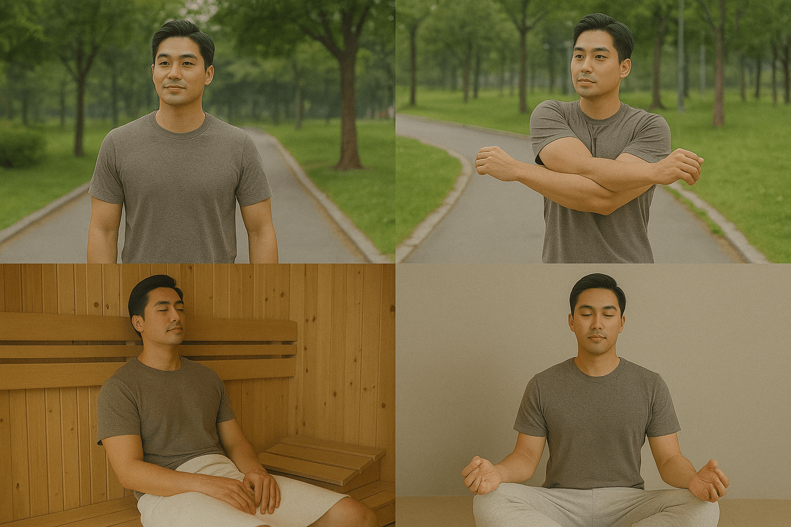

女性护理中心
筛查 · 治疗 · 生育 · 产后 · 私密 · 更年期与激素管理
我们把女性医疗按「阶段 + 需求」拆成清晰路径：评估 → 选择 → 治疗/管理 → 复盘。 无论是体检筛查、手术治疗、备孕生育、产后修复、私密困扰，还是更年期激素管理，都可以用同一套逻辑做出不模糊、可执行的方案。

产后恢复与盆底管理：把“恢复”当成系统工程。

压力、睡眠、体重、激素波动：很多困扰需要一起处理。
1) 妇科筛查与体检（把风险提前看见）
适用：首次检查/多年未检/体检异常复查/家族史（乳腺、卵巢、子宫、结直肠等）/HPV阳性或曾异常。
基础筛查
HPV/宫颈
乳腺
卵巢/子宫
内分泌
感染/分泌物
核心项目（不模糊版）
- 宫颈：宫颈细胞学（TCT/ThinPrep）＋ HPV分型；必要时阴道镜与活检。
- 乳腺：乳腺超声；需要时加做乳腺钼靶/进一步影像评估。
- 子宫/卵巢：经阴道超声（或经腹超声）评估肌瘤、腺肌症、囊肿、内膜厚度。
- 感染：分泌物检查（pH、显微/培养、性传播相关检测按需）。
- 内分泌：月经紊乱/备孕/疑似多囊/更年期评估：性激素、甲状腺、维D、代谢指标按需求组合。
提示：检查项目最终以医生评估为准；我们强调“为什么做、做完怎么解读、下一步是什么”。
2) 妇科治疗与手术（从保守到手术的路径）
适用：肌瘤/腺肌症/卵巢囊肿/内膜息肉/反复异常出血/慢性盆腔痛/宫颈病变等。
保守治疗（先稳住，再决定）
- 药物与激素调控：止血、止痛、周期管理、贫血纠正。
- 炎症/感染规范治疗：避免反复用药但不根治。
- 影像随访：明确“观察的边界”，什么时候必须升级策略。
微创与手术（把选择讲清楚）
- 宫腔镜：内膜息肉、粘膜下肌瘤、异常出血评估与处理。
- 腹腔镜：肌瘤、囊肿、子宫内膜异位症等（视情况选择保宫/保卵巢策略）。
- 宫颈病变：阴道镜评估后，按级别选择随访/局部治疗/手术处理。
我们会把每个选择拆成：目的、效果、风险、恢复期、对生育的影响、韩国停留建议（便于医疗观光规划）。
3) 生育与生殖管理（备孕到辅助生殖）
适用：备孕超过一段时间未成功/月经不规律/反复流产/男性因素或双方因素/高龄备孕等。
评估（先把关键变量找出来）
- 女性：排卵与卵巢储备评估、子宫内膜环境、输卵管因素（按需求）。
- 男性：精液分析与相关评估（必要时泌尿男科介入）。
- 共同：甲状腺、代谢、体重、营养、睡眠与压力管理。
路径（自然备孕 → 诱导排卵 → IUI → IVF/ICSI）
- 明确每一步的“升级条件”：什么时候继续、什么时候换方案。
- 把周期与行程对齐：来韩时间窗口、复诊频率、检查与取卵/移植节点规划。
4) 盆底与私密健康（功能优先）
适用：漏尿/频尿/盆腔坠胀/性生活不适/产后松弛与疼痛/反复炎症与干涩等。
常见症状 → 可能原因 → 处理顺序
- 漏尿（压力性/急迫性）：盆底肌力评估 → 训练/物理治疗 → 必要时进一步治疗。
- 干涩与疼痛：黏膜状态评估（炎症/雌激素缺乏/敏感刺激）→ 对症治疗与护理。
- 反复炎症：先做规范检测与分型，再做治疗与复发预防（避免“反复自用药”）。
5) 私密美学与功能改善（审美建立在安全上）
适用：外观困扰/摩擦不适/产后改变/希望改善紧致与触感/功能与美学同时关注。
我们怎么把“需求”说清楚
- 先功能后美学：疼痛、炎症、干涩、瘢痕、盆底问题优先处理。
- 再谈外观：在安全边界内讨论比例、对称、触感与恢复期。
- 明确恢复与停留：何时可运动、何时可性生活、何时复诊与评估。
6) 更年期与激素管理（HRT/非HRT 全路径）
你要的不是“吃不吃激素”的争论，而是：什么时候需要评估、哪些症状算指标、怎么选方案、如何安全监测。
何时应该认真评估（时间点）
- 围绝经期：周期开始紊乱、经量变化、睡眠变差、情绪波动明显。
- 绝经后：潮热盗汗、干涩疼痛、反复泌尿问题、骨量/体成分变化加速。
- 你不必“忍到受不了”：症状影响生活质量时，就值得评估。
症状与对象（不模糊指标）
- 血管舒缩：潮热、盗汗、心悸、夜间反复醒。
- 睡眠与情绪：入睡难、早醒、焦虑、易怒、疲劳感。
- 泌尿生殖：干涩、疼痛、反复尿路不适、性生活质量下降。
- 代谢与骨骼：体重/腹部脂肪增加、肌少、骨密度下降风险。
治疗选项（HRT 与非HRT）
- 生活方式处方：睡眠、压力、运动、营养与体重管理（所有方案的底盘）。
- 非HRT：针对潮热/睡眠/情绪的对症策略与药物选择（由医生评估）。
- HRT：雌激素 ± 孕激素（是否需要取决于子宫情况与风险评估）。
- 局部治疗：针对泌尿生殖症状的局部方案（与全身方案可组合）。
安全评估与随访（你关心的“敢不敢用”）
- 用前评估：个人病史、家族史、血压/代谢、乳腺与妇科评估等。
- 用后随访：症状改善、剂量与途径调整、必要检查与风险监测。
- 目标：用最低有效剂量，在可控风险内提升生活质量。
注：具体方案必须由医生面诊后决定；页面提供的是“结构化理解”。
允许转载：请注明出处。来源：汉江春天